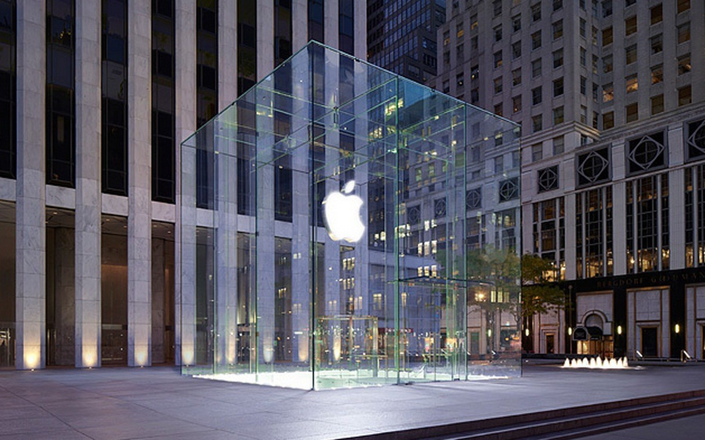
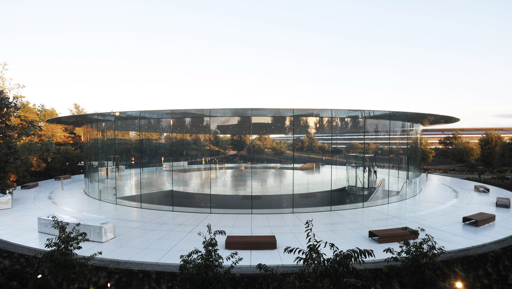
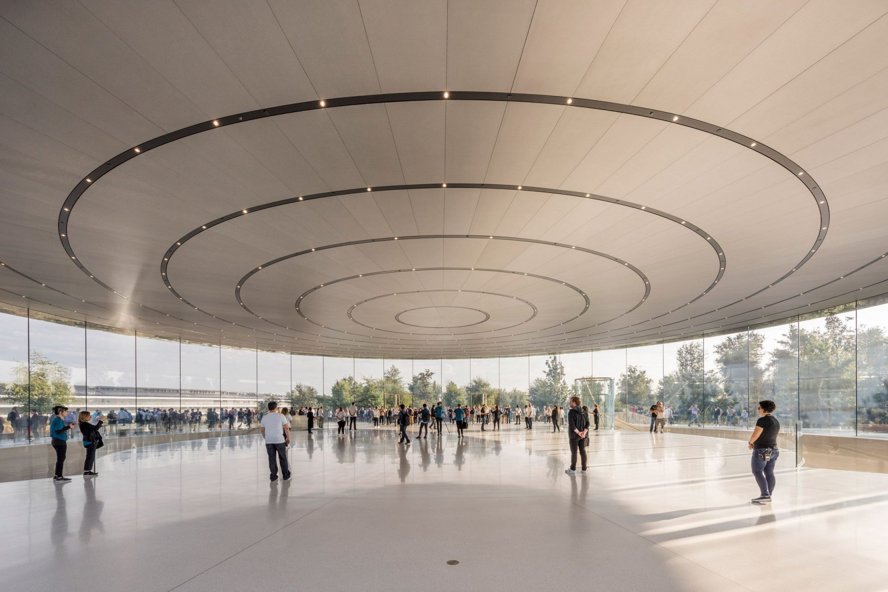
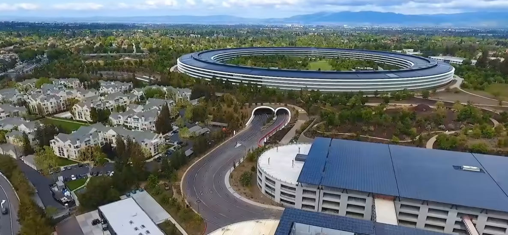

Assess the creativity and originality of the proposed design and concept, considering unique features or innovative solutions.
Sample 1

Prompt:
give a short sample architecture government building description of its creativity and originality
ChatGPT:
Creative Government Building
This government building stands as a testament to creativity and originality, defying conventional architectural norms to create a structure that captivates the imagination and inspires awe. From its unconventional form to its innovative use of materials, every aspect of the design reflects a commitment to pushing the boundaries of traditional administrative architecture.
The exterior facade is a masterpiece of architectural innovation, with sweeping curves and unexpected angles that challenge the viewer's perception. Clad in a combination of glass, steel, and sustainable wood, the facade is both strikingly modern and in harmony with its natural surroundings.
Upon entering the building, visitors are greeted by a breathtaking atrium that serves as the heart of the structure. Towering walls of living greenery provide a dramatic backdrop, while natural light floods the space through a series of skylights and clerestory windows.
The interior spaces are a celebration of creativity and functionality, with flexible layouts and unexpected design elements that encourage exploration and discovery. Curved walls and organic forms create a sense of fluidity and movement, while vibrant colors and bold patterns inject energy and vitality into the atmosphere.
In every corner of the building, artistic expression is celebrated through a curated collection of sculptures, murals, and installations created by local artists. These works not only enrich the visual experience but also serve as a reflection of the community's cultural heritage and identity.
Beyond its aesthetic appeal, the building is also a model of sustainability and efficiency, with features such as passive heating and cooling systems, rainwater harvesting, and green roofs reducing its environmental impact and operating costs.
Overall, this creative government building is a testament to the power of architecture to inspire, uplift, and unite. By embracing creativity and originality, it serves as a symbol of progress and possibility, inviting citizens to imagine a brighter future together.
☛ Sample Images:
Apple Fifth Avenue Store in New York City
Apple Park Steve Jobs Theater Exterior
Apple Park Steve Jobs Theater Interior
☛ Sample YouTube Videos:

- YouTube Link 1: Inside Apple's Steve Jobs Theater
- YouTube Link 2: History of the Fifth Avenue Apple Store
Sample 1
Prompt:
give a short sample architecture building description of its features
ChatGPT:
Modern Office Building
This contemporary office building boasts a sleek and dynamic facade, characterized by floor-to-ceiling glass panels framed by smooth, minimalist lines. The facade's interplay of transparency and solid elements creates a visually striking exterior, while also maximizing natural light intake for the interior spaces.
Internally, the spatial layout is designed to foster collaboration and productivity, with open-plan work areas seamlessly integrated with private offices, meeting rooms, and communal spaces. The design prioritizes flexibility, allowing for easy adaptation to evolving work patterns and organizational needs.
Structurally, the building features a steel frame system, providing both strength and versatility for future modifications. Sustainable design principles are woven into every aspect, with features such as green roofs, energy-efficient glazing, and passive ventilation systems contributing to reduced environmental impact and enhanced occupant comfort.
Interior finishes combine clean lines with warm, natural materials, creating a welcoming atmosphere conducive to creativity and focus. Strategic placement of communal areas and breakout spaces encourages interaction and brainstorming among employees, while private retreats offer moments of quiet reflection.
Accessibility is paramount, with barrier-free access points, spacious corridors, and thoughtfully designed amenities catering to diverse needs. Safety and security measures are seamlessly integrated, ensuring peace of mind for occupants without compromising the building's aesthetic integrity.
Overall, this modern office building represents a harmonious blend of form and function, embodying the principles of contemporary architecture while providing a dynamic and inspiring workspace for its occupants.
Sample 2
Prompt:
give a short sample architecture government building description of its aesthetics features
ChatGPT:
Government Administration Building
This government administration building stands as a symbol of stability and authority, its imposing facade exuding strength and permanence. Constructed of locally sourced stone, the exterior is characterized by grand columns and intricate detailing, reminiscent of classical architecture.
The building's aesthetics are marked by a sense of dignity and solemnity, reflecting its role as a seat of governance. A central entrance framed by a portico commands attention, with steps leading up to heavy wooden doors adorned with ornate metalwork.
As visitors enter the building, they are greeted by a spacious lobby adorned with marble flooring and vaulted ceilings. Natural light filters through stained glass windows, casting a warm and reverent glow upon the space.
Throughout the interior, rich wood paneling and plush furnishings convey an atmosphere of prestige and authority. Artworks and historical artifacts line the walls, paying homage to the region's heritage and values.
In the chambers and meeting rooms, the design is both functional and elegant, with polished mahogany desks and leather chairs arranged around a central dais. High ceilings and large windows create an air of openness and transparency, fostering an environment conducive to collaboration and debate.
Outside, manicured gardens and pathways invite visitors to linger and reflect, while security measures discreetly ensure the safety of occupants and visitors alike.
Overall, this government administration building marries timeless aesthetics with practical functionality, serving as a fitting symbol of governance and civic pride.
☛ Sample Images:
Apple Park Features
Sample 1
Prompt:
give a short sample architecture government building description of its innovative solutions
ChatGPT:
Innovative Government Building
This pioneering government building stands as a beacon of innovation and efficiency, redefining the traditional concept of administrative architecture. Designed with a forward-thinking approach, it seamlessly integrates cutting-edge technologies and sustainable solutions to meet the evolving needs of governance in the 21st century.
The building's facade is a testament to modernity, featuring dynamic and energy-efficient materials that not only enhance its aesthetic appeal but also contribute to its sustainability. Photovoltaic panels seamlessly integrated into the exterior harness solar energy, providing a renewable power source while reducing the building's carbon footprint.
Upon entering the building, visitors are greeted by an immersive digital experience that guides them through the administrative process with ease. Interactive touchscreens and augmented reality displays provide real-time information and assistance, streamlining services and reducing wait times.
The interior spaces are designed to foster collaboration and transparency, with open-plan work areas and flexible meeting spaces equipped with state-of-the-art communication and conferencing technologies. Smart sensors monitor occupancy levels and adjust lighting and climate control systems accordingly, optimizing energy usage and comfort.
Innovative solutions extend beyond the building itself, with a dedicated app that allows citizens to access government services remotely and stay informed about important updates and announcements. Virtual town hall meetings and online forums provide opportunities for civic engagement and feedback, fostering a sense of community involvement.
Sustainability is at the core of the building's design, with features such as green roofs, rainwater harvesting systems, and passive heating and cooling strategies reducing resource consumption and promoting environmental stewardship.
Overall, this innovative government building serves as a model for efficient and citizen-centric governance, harnessing technology and sustainability to create a more responsive and inclusive public administration.
☛ Sample Images:
Apple Park Innovations

The Harmony Citaldeck Features
- tall ceilings
- glass walls
- tropical garden in Penang Malaysia
How I Generated a Description Based On This:
Prompt:
A 8k vivid realistic picture. the exterior architecture of a government building with tall ceilings and glass walls admist a tropical garden in Penang, Malaysia. Write a description of this building
ChatGPT:
The government building nestled amidst the tropical garden in Penang, Malaysia, stands as a modern architectural masterpiece, seamlessly blending contemporary design with the lush natural surroundings. Its exterior is a harmonious symphony of sleek lines, glass expanses, and verdant foliage.
Towering ceilings and clean, geometric lines characterize the façade, creating an imposing yet elegant structure. The building's exterior is primarily composed of reflective glass walls, allowing an abundance of natural light to flood the interior and providing unobstructed views of the breathtaking tropical garden that envelops the structure. The glass walls not only serve a functional purpose but also become a canvas, merging the boundaries between the interior and the vibrant landscape beyond.
The building is strategically situated to maximize the visual impact of its surroundings. The tropical garden, with its diverse array of palm trees, exotic flowers, and vibrant greenery, serves as a living backdrop. As the glass walls rise to towering heights, they frame the natural beauty outside like a living tapestry, allowing occupants to be constantly connected with the rich biodiversity of Penang.
Vertical gardens and cascading vines adorn sections of the building's exterior, adding a touch of greenery to the sleek façade. The integration of sustainable design elements, such as energy-efficient glass and shading devices, reflects a commitment to environmental consciousness.
At the entrance, a grand portico welcomes visitors, providing both shelter and a visual focal point. The design of the entrance incorporates elements inspired by local architecture, seamlessly marrying modernity with traditional influences. The juxtaposition of the contemporary building against the tropical garden creates a captivating visual contrast, emphasizing both the advancements of human innovation and the enduring beauty of nature.
As daylight transitions to dusk, the building comes alive with strategically placed exterior lighting that accentuates its architectural features. The glass walls transform into a luminescent canvas, casting a warm and inviting glow that contrasts with the darkness of the surrounding garden.
This government building is not merely a structure; it is a testament to the thoughtful integration of architecture and nature, where the built environment and the tropical landscape coexist in perfect harmony. It stands as a symbol of progress, transparency, and a commitment to preserving the natural beauty that defines Penang, Malaysia.
Consider the practicality and feasibility of implementing the proposed design, considering potential challenges and realistic timelines.
Prompt:
Government Administration Building
This government administration building stands as a symbol of stability and authority, its imposing facade exuding strength and permanence. Constructed of locally sourced stone, the exterior is characterized by grand columns and intricate detailing, reminiscent of classical architecture.
The building's aesthetics are marked by a sense of dignity and solemnity, reflecting its role as a seat of governance. A central entrance framed by a portico commands attention, with steps leading up to heavy wooden doors adorned with ornate metalwork.
As visitors enter the building, they are greeted by a spacious lobby adorned with marble flooring and vaulted ceilings. Natural light filters through stained glass windows, casting a warm and reverent glow upon the space.
Throughout the interior, rich wood paneling and plush furnishings convey an atmosphere of prestige and authority. Artworks and historical artifacts line the walls, paying homage to the region's heritage and values.
In the chambers and meeting rooms, the design is both functional and elegant, with polished mahogany desks and leather chairs arranged around a central dais. High ceilings and large windows create an air of openness and transparency, fostering an environment conducive to collaboration and debate.
Outside, manicured gardens and pathways invite visitors to linger and reflect, while security measures discreetly ensure the safety of occupants and visitors alike.
Overall, this government administration building marries timeless aesthetics with practical functionality, serving as a fitting symbol of governance and civic pride.
Consider the practicality and feasibility of implementing the proposed design, considering potential challenges and realistic timelines.
Certainly, let's consider the practicality and feasibility of implementing the proposed design for the government administration building:
Material Sourcing and Construction: The use of locally sourced stone for the exterior facade may be feasible depending on the availability of suitable materials in the region. However, sourcing and transporting large quantities of stone could be costly and time-consuming. Additionally, intricate detailing on the facade may require skilled craftsmanship, which could impact construction timelines and budget.
Maintenance Considerations: While marble flooring and wood paneling contribute to the building's luxurious aesthetic, they may also require regular maintenance to preserve their appearance and integrity. The government agency responsible for the building would need to budget for ongoing cleaning, repairs, and restoration as needed.
Accessibility: The design should prioritize accessibility for all visitors, including those with disabilities. This may require modifications such as wheelchair ramps, elevators, and accessible restrooms, in compliance with building codes and accessibility standards.
Security Measures: Incorporating discreet security measures is essential for ensuring the safety of occupants and visitors. This could include surveillance cameras, access control systems, and security personnel. Balancing security needs with the building's aesthetic can be achieved through thoughtful integration of these features into the overall design.
Sustainability: While the proposed design emphasizes timeless aesthetics, it's also important to consider sustainability principles. This could involve incorporating energy-efficient lighting, heating, and cooling systems, as well as using sustainable materials and landscaping practices to minimize environmental impact.
Budget and Timelines: The construction budget and timeline must align with the government agency's resources and requirements. Detailed cost estimates and project schedules should be developed to ensure that the proposed design can be realistically implemented within these constraints.
Overall, while the proposed design for the government administration building embodies a sense of dignity and authority, careful consideration must be given to practical considerations such as material sourcing, maintenance, accessibility, security, sustainability, budget, and timelines to ensure a successful and feasible project implementation.
Evaluate how well the landscaping and building positioning work together to create a unified and aesthetically pleasing design.
Prompt:
This government building stands as a testament to creativity and originality, defying conventional architectural norms to create a structure that captivates the imagination and inspires awe. From its unconventional form to its innovative use of materials, every aspect of the design reflects a commitment to pushing the boundaries of traditional administrative architecture.
The exterior facade is a masterpiece of architectural innovation, with sweeping curves and unexpected angles that challenge the viewer's perception. Clad in a combination of glass, steel, and sustainable wood, the facade is both strikingly modern and in harmony with its natural surroundings.
Upon entering the building, visitors are greeted by a breathtaking atrium that serves as the heart of the structure. Towering walls of living greenery provide a dramatic backdrop, while natural light floods the space through a series of skylights and clerestory windows.
The interior spaces are a celebration of creativity and functionality, with flexible layouts and unexpected design elements that encourage exploration and discovery. Curved walls and organic forms create a sense of fluidity and movement, while vibrant colors and bold patterns inject energy and vitality into the atmosphere.
In every corner of the building, artistic expression is celebrated through a curated collection of sculptures, murals, and installations created by local artists. These works not only enrich the visual experience but also serve as a reflection of the community's cultural heritage and identity.
Beyond its aesthetic appeal, the building is also a model of sustainability and efficiency, with features such as passive heating and cooling systems, rainwater harvesting, and green roofs reducing its environmental impact and operating costs.
Overall, this creative government building is a testament to the power of architecture to inspire, uplift, and unite. By embracing creativity and originality, it serves as a symbol of progress and possibility, inviting citizens to imagine a brighter future together.
Evaluate how well the landscaping and building positioning work together to create a unified and aesthetically pleasing design.
The landscaping and building positioning described in the passage work together harmoniously to create a unified and aesthetically pleasing design that enhances the overall appeal and functionality of the government building. Here's an evaluation of how they contribute to this cohesive design:
Integration with Natural Surroundings: The landscaping appears to be thoughtfully integrated with the natural surroundings, complementing the innovative architectural design of the building. The use of living greenery in the atrium and green roofs helps blur the boundaries between the built environment and nature, creating a seamless transition that enhances the overall aesthetic appeal.
Enhanced Visual Appeal: The landscaping, including the living greenery and green roofs, adds visual interest and texture to the exterior of the building. This enhances the overall aesthetic appeal by softening the edges of the structure and creating a more inviting and visually pleasing environment for visitors.
Functional Benefits: Beyond aesthetic considerations, the landscaping also provides functional benefits such as passive cooling and rainwater harvesting, contributing to the building's sustainability goals. The positioning of the building may also take advantage of natural features such as prevailing winds and solar orientation to enhance energy efficiency and occupant comfort.
Unified Design Language: Both the landscaping and building positioning seem to adhere to a unified design language characterized by creativity, innovation, and sustainability. The sweeping curves, organic forms, and use of sustainable materials in the building's design are echoed in the landscaping elements, creating a cohesive and integrated aesthetic that reinforces the building's overall design concept.
User Experience: The landscaping and building positioning contribute to a positive user experience by creating inviting outdoor spaces for relaxation and social interaction. The atrium with its living greenery and natural light serves as a welcoming focal point for visitors, while the strategic positioning of the building may offer views of surrounding green spaces or other scenic vistas, further enhancing the overall experience.
Overall, the landscaping and building positioning appear to be carefully planned and executed to create a unified and aesthetically pleasing design that seamlessly integrates with the natural environment while also fulfilling functional requirements and sustainability goals. Together, they contribute to the building's identity as a creative and inspiring architectural masterpiece.
Evaluate how well the proposed location maximises the available space, considering factors such as sunlight exposure, wind direction, and overall integration with the surrounding environment.
Critical Thinking and Research: Ask What, Why, How.
What is site optimization in architecture? What is maximizing available space in architecture? What is sunlight exposure. What is wind direction. On YouTube or (ChatGPT or Google): Search "architecture maximizing space". Search "architecture sunlight exposure tropical". Search "architecture wind direction". Search "architecture integration with the surrounding environment".
Prompt:
architecture maximizing space
ChatGPT:Maximizing space in architecture involves utilizing design strategies to make the most efficient and effective use of available square footage. Here are several techniques to achieve this:
Flexible Layouts: Design spaces with flexible layouts that can adapt to various functions and activities. Use movable partitions, modular furniture, and multi-purpose rooms to accommodate changing needs and optimize space utilization.
Vertical Expansion: Make use of vertical space by incorporating mezzanines, loft areas, or double-height ceilings to increase usable floor area without expanding the building footprint. Utilize staircases or ladders to access elevated spaces efficiently.
Open Floor Plans: Create open floor plans that eliminate unnecessary partitions and barriers, allowing for better flow and spatial continuity. Open layouts can maximize perceived space and flexibility, especially in smaller areas.
Natural Light and Transparency: Maximize natural light and create a sense of openness by incorporating large windows, skylights, and glass partitions. Transparency enhances spatial perception and can make small spaces feel more expansive.
By implementing these strategies, architects can optimize space utilization and create environments that are functional, adaptable, and aesthetically pleasing, regardless of size constraints or spatial limitations.
Why do we care about space maximization? Why do we care about sunlight exposure? Why do we care about wind direction?
Because exposure to sunlight is blinding to the eyes. Because exposure to sunlight creates heat in the building, thus using up more energy to cool down the building.
You can also ask ChatGPT by typing in "Why do we care about sunlight exposure in architecture" in the prompt or extract from the above ChatGPT response to "architecture maximizing space".
How do we maximize space? How do we prevent exposure to sunlight? How do we make use of wind direction.
- We maximize space by ______________.
- We minimize sunlight exposure by ______________.
- We make use of wind direction by __________________.
You can also ask ChatGPT by typing in "How do we prevent exposure to sunlight in architecture" in the prompt.
In your YouTube search, find and watch about 3 relevant videos, then bookmark or note those 3 video links down.
- YouTube Link 1: __________________.
- YouTube Link 2: __________________.
- YouTube Link 3: __________________.
☛ Sample YouTube Videos:
- YouTube Link 1: 10 TIPS FOR PASSIVE HOUSE DESIGN (HOT CLIMATE)
- YouTube Link 2: How to position your house properly || home orientation Tips
- YouTube Link 3: TIPS to bring sunlight to your home!
How do we maximize space? How do we prevent exposure to sunlight? How do we make use of wind direction.
You can create these answers yourself or extract them from your YouTube research or from ChatGPT.
Example: We minimize sunlight exposure by:
- Making the windows face North and South.
- Make Green Wall (Trees/Landscaping) to shield sunglight from East and West
- Create Roof Shading for Shadowing Purposes.
☛ Or Extract 3 answers from ChatGPT for each item
Prompt:
architecture sunlight exposure tropical
ChatGPT:In tropical regions, where sunlight is abundant throughout the year, architects must carefully manage sunlight exposure to maintain thermal comfort, minimize glare, and maximize energy efficiency. Here are several strategies specifically tailored to tropical climates:
Building Orientation: Orient buildings to minimize direct exposure to the harsh midday sun, typically from the east and west. In tropical regions, a north-south orientation is often preferred, with main facades facing north and south to maximize daylighting while minimizing solar heat gain.
Shading Devices: Incorporate shading devices such as overhangs, awnings, louvers, and brise-soleil to block direct sunlight from entering interior spaces. Adjustable shading systems can be particularly effective in tropical climates, allowing occupants to control sunlight penetration based on seasonal variations and time of day.
Deep Overhangs and Eaves: Design buildings with deep roof overhangs and eaves to provide extensive shading to windows and exterior walls. This helps to reduce solar heat gain, protect building materials from direct exposure to sunlight, and create comfortable outdoor living spaces.
Vegetation and Greenery: Incorporate vegetation, such as trees, shrubs, and green roofs, into building designs to provide natural shading and evaporative cooling. Planting vegetation strategically around buildings can reduce solar exposure, enhance microclimate conditions, and improve overall environmental quality.
By integrating these strategies into architectural design, architects can effectively manage sunlight exposure in tropical climates to create comfortable, energy-efficient, and visually pleasing buildings that respond to the unique challenges and opportunities of their environment.
Example Extracted Answer:
- We orient our building to minimize direct exposure to the harsh midday sun, typically from the east and west. In tropical regions, a north-south orientation is often preferred, with main facades facing north and south to maximize daylighting while minimizing solar heat gain.
- We incorporate vegetation, such as trees, shrubs, and green roofs, into building designs to provide natural shading and evaporative cooling. Planting vegetation strategically around buildings can reduce solar exposure, enhance microclimate conditions, and improve overall environmental quality.
- We design our building with deep roof overhangs and eaves to provide extensive shading to windows and exterior walls. This helps to reduce solar heat gain, protect building materials from direct exposure to sunlight, and create comfortable outdoor living spaces.

Assess the accessibility of the administration building and offices, considering factors like proximity to public transportation, parking facilities, and ease of entry for people with disabilities.
Prompt:
architecture assessibility
ChatGPT:Assessing the accessibility of architecture involves evaluating how well buildings and spaces accommodate the needs of individuals with disabilities, ensuring they can navigate, access, and utilize them comfortably and independently. Here's a breakdown of how architecture accessibility can be assessed:
Physical Accessibility: This involves evaluating features like ramps, elevators, door widths, and hallway widths to ensure they comply with accessibility standards such as the Americans with Disabilities Act (ADA) in the United States or similar regulations in other countries. It also includes assessing the presence of tactile indicators, handrails, and accessible parking spaces.
Universal Design: Universal design principles aim to create spaces usable by people of all ages, sizes, and abilities. Assessing universal design involves evaluating features such as curb cuts, lever door handles (instead of knobs), adjustable-height counters, and easy-to-reach controls.
Sensory Considerations: Sensory accessibility involves considering the needs of individuals with sensory disabilities, including visual impairments, hearing impairments, and sensory processing disorders. This may include assessing signage readability, auditory cues, tactile maps, and visual contrast.
Wayfinding: Evaluating how easily individuals can navigate through a space is crucial for accessibility. This involves assessing signage clarity, intuitive layout design, and the availability of accessible routes that provide clear paths for those with mobility aids.
Assistive Technologies: Assessing whether a building or space accommodates assistive technologies such as wheelchairs, walkers, and hearing aids is essential. This includes evaluating features like accessible restrooms, hearing loop systems, and technology interfaces compatible with screen readers.
Inclusive Amenities: Consideration should be given to the inclusivity of amenities such as restrooms, seating areas, and recreational facilities. These areas should be designed to accommodate a diverse range of needs, including those of individuals with disabilities.
Emergency Evacuation: Accessibility in architecture also involves ensuring that individuals with disabilities can safely evacuate a building during emergencies. This may include assessing the availability of evacuation routes, emergency alarms with visual and auditory signals, and evacuation assistance devices.
Community Integration: Assessing how well a building or space integrates individuals with disabilities into the community is important. This involves considering factors such as proximity to public transportation, access to community services, and the presence of inclusive social spaces.
User Feedback: Finally, gathering feedback from individuals with disabilities about their experiences in a particular space is essential for ongoing assessment and improvement of accessibility.
By considering these factors, architects and designers can assess the accessibility of their designs and make informed decisions to create more inclusive environments for everyone.
☛ Sample YouTube Videos:
- YouTube Link 1: Why Is Accessible Design Good for Everyone? | ARTiculations
- YouTube Link 2: Designing for Accessibility: Inclusive Landscape Architecture
Consider the efficiency of the proposed layout in facilitating the day-to- day functions of the administration building and offices.
Architecture Functional Efficiency
ChatGPTFunctional efficiency in architecture refers to the effectiveness of a building's design in meeting its intended purpose while optimizing resources, space, and functionality. Here are key aspects to consider when assessing the functional efficiency of architecture:
Spatial Planning: Efficient architecture involves thoughtful spatial planning to ensure that every area within the building serves its purpose effectively. This includes considering the flow of movement, organization of rooms, and allocation of space for various functions.
User Needs Analysis: Understanding the needs of the users is crucial for designing a space that functions efficiently. Architects should conduct thorough analyses to determine the requirements and preferences of the occupants, considering factors such as demographics, activities, and accessibility needs.
Flexibility and Adaptability: Functional efficiency is enhanced when a building can adapt to changing needs over time. Designing flexible spaces that can be easily reconfigured or repurposed allows for efficient utilization of resources and accommodates evolving requirements.
Optimized Layout and Circulation: Efficient architecture prioritizes an intuitive layout and circulation design that minimizes unnecessary movement and maximizes accessibility. This involves placing related spaces in close proximity, reducing travel distances, and ensuring smooth traffic flow within the building.
Integration of Technology: Incorporating appropriate technologies into the design can enhance functional efficiency by streamlining processes, improving communication, and optimizing energy usage. This may include smart building systems, automation, and sustainable technologies.
Natural Lighting and Ventilation: Effective use of natural light and ventilation not only enhances the aesthetics of a space but also contributes to its functional efficiency. Well-lit and well-ventilated environments promote occupant comfort, productivity, and overall well-being while reducing reliance on artificial lighting and mechanical systems.
Sustainable Design Strategies: Sustainable design principles, such as passive solar design, efficient insulation, and water-saving measures, play a significant role in enhancing functional efficiency. By minimizing environmental impact and operating costs, sustainable buildings can achieve long-term efficiency goals.
Building Performance Optimization: Continuous monitoring and optimization of building performance through data analysis and feedback allow for ongoing improvements in functional efficiency. This may involve energy audits, indoor environmental quality assessments, and occupant surveys to identify areas for enhancement.
Evaluate the design and capacity of parking facilities, taking into account the anticipated needs of both employees and visitors.
Assess the inclusion of well-designed leisure areas that contribute to the overall well-being of the occupants and enhance the aesthetic appeal of the site.
Consider the inclusion of service facilities such as waste management, security, and other essential services to ensure a smooth operation.
architecture waste management
ChatGPTWaste management in architecture refers to the planning, design, and implementation of systems and strategies for the collection, disposal, recycling, and treatment of waste generated within built environments. Here are key aspects to consider when addressing waste management in architecture:
Waste Collection and Storage: Designate appropriate areas for waste collection and storage within buildings, such as trash rooms, loading docks, or compactors. Ensure that these areas are easily accessible to waste collection vehicles and equipped with proper ventilation and containment measures.
Efficient Waste Transportation: Plan for efficient waste transportation routes and access points to facilitate the removal of waste from buildings to off-site disposal or recycling facilities. Consider factors such as vehicle access, traffic flow, and environmental impacts when designing waste management logistics.
architecture waste management bin positions
ChatGPTDetermining the positions of waste management bins within architectural spaces involves strategic planning to ensure convenience, accessibility, and efficient waste disposal. Here are some considerations for placing waste bins effectively:
Accessibility: Position waste bins in easily accessible locations throughout the building to encourage proper waste disposal by occupants and visitors. Place bins near high-traffic areas, such as entrances, corridors, common areas, and gathering spaces, where people are likely to generate waste.
Near Food and Beverage Areas: Install waste bins near food preparation areas, dining areas, and vending machines to facilitate the disposal of food scraps, wrappers, and beverage containers. This helps prevent littering and encourages proper waste separation, especially for recyclable materials.
In Restroom Facilities: Provide waste bins in restroom facilities for the disposal of paper towels, feminine hygiene products, and other restroom waste. Position bins near handwashing stations and toilet stalls for easy access and convenience.
At Workstations and Desks: Place small waste bins at individual workstations, desks, and cubicles to encourage employees to dispose of paper waste, food wrappers, and other desk-related trash promptly. Consider providing separate bins for recyclables and non-recyclables to promote waste diversion.
Near Printing and Copying Stations: Install waste bins near printing and copying stations to collect paper waste, toner cartridges, and other printing-related materials. Encourage users to recycle paper and properly dispose of printer consumables to minimize waste and conserve resources.
In Recycling Stations: Create centralized recycling stations or areas where users can sort and deposit recyclable materials, such as paper, plastics, glass, and metal. Provide clearly labeled bins for different types of recyclables and educational signage to guide users on proper sorting practices.
In Outdoor Spaces: Place waste bins in outdoor spaces, such as courtyards, plazas, and recreational areas, to accommodate waste generated during outdoor activities and events. Ensure that outdoor bins are securely anchored, weather-resistant, and emptied regularly to prevent overflow and littering.
Near Loading Docks and Service Areas: Install waste bins near loading docks, service areas, and delivery entrances to facilitate the disposal of packaging materials, pallets, and other industrial waste. Position bins strategically to minimize obstruction of vehicle access and loading operations.
Emergency Exits and Evacuation Routes: Avoid placing waste bins near emergency exits, evacuation routes, and stairwells to prevent obstruction during emergency situations. Ensure that waste bins do not impede egress or hinder the movement of occupants during evacuations.
Consider Aesthetic and Design Factors: Integrate waste bins seamlessly into the architectural design and interior decor of the building to maintain aesthetic appeal. Choose bins that complement the overall design aesthetic, materials, and color scheme of the space.
By considering these factors, architects and facility managers can strategically position waste bins within architectural spaces to promote responsible waste management practices, enhance user convenience, and maintain a clean and hygienic environment.
architecture toilet management
ChatGPTToilet management in architecture involves designing, planning, and maintaining restroom facilities to ensure cleanliness, functionality, accessibility, and user comfort. Here are some key considerations for effective toilet management in architectural design:
Space Planning: Allocate adequate space for restroom facilities within the building layout, considering factors such as occupancy levels, user demographics, and building codes. Design restrooms to accommodate peak usage periods while minimizing congestion and wait times.
Accessibility: Ensure that restroom facilities comply with accessibility standards and regulations to accommodate individuals with disabilities and mobility challenges. Provide accessible stalls, grab bars, wheelchair clearance, and signage to facilitate use by all users.
Hygiene and Sanitation: Design restrooms with features that promote hygiene and sanitation, such as touchless fixtures, automatic flush toilets, sensor-operated faucets, and hands-free soap dispensers. Use durable, easy-to-clean materials and finishes to maintain cleanliness and reduce maintenance requirements.
Ventilation and Air Quality: Ensure adequate ventilation and air circulation within restroom facilities to mitigate odors, prevent moisture buildup, and maintain indoor air quality. Install exhaust fans, operable windows, or mechanical ventilation systems to improve airflow and ventilation.
Privacy and Comfort: Design restroom stalls and partitions to provide adequate privacy and comfort for users. Ensure sufficient space within stalls for maneuverability, personal belongings, and accessibility aids. Consider providing amenities such as seating areas, mirrors, and diaper-changing stations for user convenience.
Maintenance Accessibility: Design restroom facilities with ease of maintenance in mind, providing access panels, service corridors, and storage areas for cleaning supplies and equipment. Use durable, low-maintenance materials and finishes that resist staining, mold, and bacterial growth.
Waste Management: Provide waste bins for the disposal of sanitary products, paper towels, and other restroom waste. Ensure that waste bins are emptied regularly to prevent overflow and maintain cleanliness. Consider incorporating waste separation and recycling bins to promote sustainability.
Wayfinding and Signage: Install clear signage and wayfinding cues to guide users to restroom facilities and indicate the location of different amenities, such as accessible stalls, baby-changing stations, and gender-inclusive restrooms. Use universal symbols and tactile signage for accessibility.
Emergency Preparedness: Develop emergency procedures and protocols for restroom facilities, including evacuation routes, emergency call buttons, and access for first responders. Ensure that restroom facilities are equipped with emergency lighting, fire extinguishers, and other safety features.
By addressing these considerations in architectural design and planning, architects can create restroom facilities that meet the needs of users while promoting hygiene, accessibility, and user comfort. Effective toilet management enhances the overall user experience and contributes to the functionality and success of the built environment.
architecture security
ChatGPTSecurity is a crucial aspect of architectural design, encompassing measures to protect buildings, occupants, and assets from threats such as unauthorized access, vandalism, theft, and violence. Here are key considerations for integrating security into architectural design:
Site Selection and Layout: Choose a site that minimizes security risks, such as isolated locations with limited access points. Design the layout of buildings and outdoor spaces to maximize natural surveillance, visibility, and control over entry and exit points.
Perimeter Security: Implement physical barriers and access controls around the perimeter of the site to deter unauthorized intrusion. This may include fences, walls, gates, bollards, and vehicle barriers designed to restrict access and control entry points.
Access Control Systems: Install access control systems to regulate entry to buildings and sensitive areas within the facility. This may include electronic locks, key card readers, biometric scanners, and intercom systems to authenticate users and monitor access permissions.
Surveillance and Monitoring: Deploy surveillance cameras, motion sensors, and alarm systems to monitor activity and detect security breaches. Ensure comprehensive coverage of critical areas, including building entrances, parking lots, and vulnerable points of entry.
Security Lighting: Illuminate building exteriors, pathways, and parking areas with strategic lighting to deter criminal activity and enhance visibility during nighttime hours. Use motion-activated lighting and timer controls to conserve energy while maintaining security.
Natural Surveillance: Design buildings with clear sightlines and visual access to outdoor spaces to facilitate natural surveillance by occupants and security personnel. Place windows, glass doors, and transparent barriers strategically to maximize visibility and deter illicit behavior.
Security Zones and Layers: Establish security zones and layers within buildings to control access and compartmentalize sensitive areas. Implement measures such as key card access, security checkpoints, and secure doors to restrict movement and protect assets.
Emergency Egress and Evacuation: Design emergency egress routes and exits to facilitate safe evacuation in the event of an emergency. Ensure that exit doors are easily accessible, well-marked, and equipped with panic hardware for rapid egress.
Security Staff and Training: Employ security personnel and provide comprehensive training on security protocols, emergency response procedures, and threat mitigation strategies. Foster a culture of vigilance and awareness among building occupants to enhance security awareness and readiness.
Collaboration with Authorities: Collaborate with local law enforcement agencies, emergency responders, and security experts to assess security risks, develop contingency plans, and coordinate response efforts. Engage in regular security assessments and drills to identify vulnerabilities and strengthen preparedness.
By integrating these security considerations into architectural design and planning, architects can create environments that prioritize the safety and well-being of occupants while mitigating security risks and protecting assets. Effective security measures enhance the functionality, resilience, and longevity of the built environment.
Evaluate the planning and integration of food and beverage spaces, considering factors such as accessibility, variety, and sustainability.
Evaluate how well the proposal addresses environmental concerns, including energy efficiency, water conservation, and the use of sustainable materials.
Assess the proposal's consideration of social aspects, such as community engagement, inclusivity, and the creation of public spaces that foster social interaction.
Evaluate the adherence to ethical governance practices, including transparency, accountability, and compliance with relevant regulations.
The Harmony Citaldeck Features
- tall ceilings
- glass walls
- tropical garden in Penang Malaysia

Prompt:
A 8k vivid realistic picture. the exterior architecture of a government building with tall ceilings and glass walls admist a tropical garden in Penang, Malaysia.
Prompt:
A 8k vivid realistic picture. the exterior architecture of a government building with tall ceilings and glass walls admist a tropical garden in Penang, Malaysia. Write a description of this building
ChatGPT:
The government building nestled amidst the tropical garden in Penang, Malaysia, stands as a modern architectural masterpiece, seamlessly blending contemporary design with the lush natural surroundings. Its exterior is a harmonious symphony of sleek lines, glass expanses, and verdant foliage.
Towering ceilings and clean, geometric lines characterize the façade, creating an imposing yet elegant structure. The building's exterior is primarily composed of reflective glass walls, allowing an abundance of natural light to flood the interior and providing unobstructed views of the breathtaking tropical garden that envelops the structure. The glass walls not only serve a functional purpose but also become a canvas, merging the boundaries between the interior and the vibrant landscape beyond.
The building is strategically situated to maximize the visual impact of its surroundings. The tropical garden, with its diverse array of palm trees, exotic flowers, and vibrant greenery, serves as a living backdrop. As the glass walls rise to towering heights, they frame the natural beauty outside like a living tapestry, allowing occupants to be constantly connected with the rich biodiversity of Penang.
Vertical gardens and cascading vines adorn sections of the building's exterior, adding a touch of greenery to the sleek façade. The integration of sustainable design elements, such as energy-efficient glass and shading devices, reflects a commitment to environmental consciousness.
At the entrance, a grand portico welcomes visitors, providing both shelter and a visual focal point. The design of the entrance incorporates elements inspired by local architecture, seamlessly marrying modernity with traditional influences. The juxtaposition of the contemporary building against the tropical garden creates a captivating visual contrast, emphasizing both the advancements of human innovation and the enduring beauty of nature.
As daylight transitions to dusk, the building comes alive with strategically placed exterior lighting that accentuates its architectural features. The glass walls transform into a luminescent canvas, casting a warm and inviting glow that contrasts with the darkness of the surrounding garden.
This government building is not merely a structure; it is a testament to the thoughtful integration of architecture and nature, where the built environment and the tropical landscape coexist in perfect harmony. It stands as a symbol of progress, transparency, and a commitment to preserving the natural beauty that defines Penang, Malaysia.
Prompt:
We orient our building to minimize direct exposure to the harsh midday sun, typically from the east and west. In tropical regions, a north-south orientation is often preferred, with main facades facing north and south to maximize daylighting while minimizing solar heat gain.
Vegetation and Greenery: Incorporate vegetation, such as trees, shrubs, and green roofs, into building designs to provide natural shading and evaporative cooling. Planting vegetation strategically around buildings can reduce solar exposure, enhance microclimate conditions, and improve overall environmental quality.
We design our building with deep roof overhangs and eaves to provide extensive shading to windows and exterior walls. This helps to reduce solar heat gain, protect building materials from direct exposure to sunlight, and create comfortable outdoor living spaces.
turn this into a short description for the building
Our building design prioritizes comfort and sustainability by carefully orienting the structure to minimize harsh midday sun exposure. In tropical regions, we opt for a north-south orientation to maximize daylighting and minimize solar heat gain. Integrating lush vegetation such as trees, shrubs, and green roofs enhances shading and evaporative cooling, while strategically placed greenery improves microclimate conditions. With deep roof overhangs and eaves, we provide extensive shading to windows and exterior walls, reducing solar heat gain and protecting materials from direct sunlight. This thoughtful approach creates comfortable indoor and outdoor spaces while promoting environmental quality.
Prompt:
We orient our building to minimize direct exposure to the harsh midday sun, typically from the east and west. In tropical regions, a north-south orientation is often preferred, with main facades facing north and south to maximize daylighting while minimizing solar heat gain.
Vegetation and Greenery: Incorporate vegetation, such as trees, shrubs, and green roofs, into building designs to provide natural shading and evaporative cooling. Planting vegetation strategically around buildings can reduce solar exposure, enhance microclimate conditions, and improve overall environmental quality.
We design our building with deep roof overhangs and eaves to provide extensive shading to windows and exterior walls. This helps to reduce solar heat gain, protect building materials from direct exposure to sunlight, and create comfortable outdoor living spaces.
turn this into a script for interviewer and interviewee
[Interviewer]: Welcome to our discussion about sustainable building design. Can you please explain how your buildings are oriented to minimize exposure to harsh midday sun?
[Interviewee]: Absolutely. In our designs, we prioritize minimizing direct exposure to the midday sun, which typically comes from the east and west. This is crucial for maintaining comfortable indoor temperatures and reducing the need for excessive cooling.
[Interviewer]: I see. And how does orientation change in tropical regions?
[Interviewee]: In tropical regions, we often prefer a north-south orientation. This means the main facades of the building face north and south. This allows us to maximize daylighting while minimizing solar heat gain, which is especially important in hotter climates.
[Interviewer]: Interesting. How do you incorporate vegetation into your building designs?
[Interviewee]: We incorporate vegetation such as trees, shrubs, and green roofs strategically around the building. This not only provides natural shading but also promotes evaporative cooling and improves overall environmental quality. By reducing solar exposure and enhancing microclimate conditions, we create more comfortable and sustainable spaces.
[Interviewer]: And how do deep roof overhangs and eaves contribute to your designs?
[Interviewee]: Deep roof overhangs and eaves are essential elements of our design. They provide extensive shading to windows and exterior walls, which helps to reduce solar heat gain. Additionally, they protect building materials from direct exposure to sunlight, prolonging their lifespan. Furthermore, they create comfortable outdoor living spaces where occupants can enjoy the benefits of nature without being exposed to harsh sunlight.
[Interviewer]: Thank you for sharing those insights into your sustainable building design approach. It's clear that careful orientation, vegetation integration, and thoughtful architectural elements all play crucial roles in creating comfortable and environmentally friendly spaces.